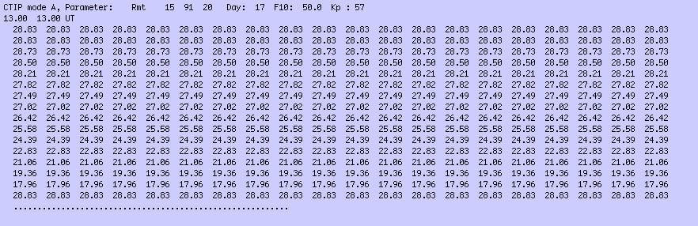
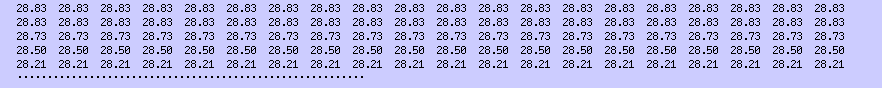
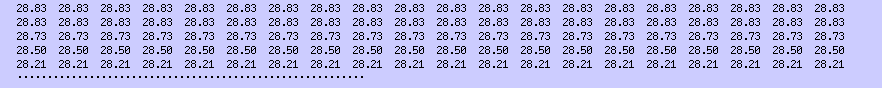
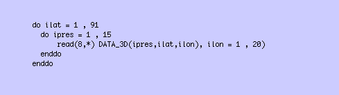

Here we take a look at the format of CTIP data files so you can get your CTIP data read
in and plotted out correctly.
Let's take a look at a typical CTIP data file. Here is an example opened in a
text editor:

There are 3 things to notice:
Firstly, the very top line is a 'header' which contains various pieces of information about the CTIP run:
Secondly, there is a 'time header' which shows the UT of the following data:
 ...and thirdly there is the data itself:

In a normal data file there will be model output from every hour of the day, thus 24 datasets in total, starting at 13.00 UT and going through to 12.00 UT.
The structure of the whole data file is therefore:
...and thirdly there is the data itself:

In a normal data file there will be model output from every hour of the day, thus 24 datasets in total, starting at 13.00 UT and going through to 12.00 UT.
The structure of the whole data file is therefore:
The format of the 3 dimensional data
At each output time step, the data is a 3 dimensional parameter of size 15 * 91 * 20 (15 pressure levels, 91 latitudes, 20 longitudes). A Fortran 'read' statement to read in the data looks like this:

Note that the inner most loop is the 20 longitudes loop, the middle loop is the 15 pressure levels and the outer most loop is the 91 latitudes.
To read a complete data file into IDL requires the following:
Simple example IDL plotting routines
The following are 4 very simple IDL programs for plotting out CTIP data (right-click to save them to your desktop):
example_latitude.pro
example_longitude.pro
example_height_profile.pro
example_contour.pro